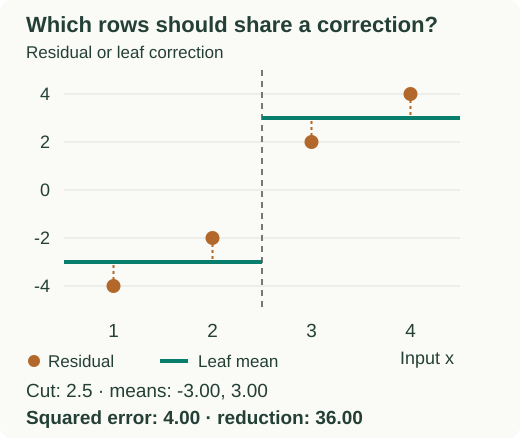

Trees as Base Learners
Once a loss supplies correction targets, a tree decides which rows share a correction. This page separates the split search, the leaf value, and the ensemble update.
Split the correction targets into useful groups
Reuse the four-row regression example: ordered inputs 1, 2, 3, 4 have residuals −4, −2, +2, +4. One leaf predicts their mean, zero, with total squared residual error 40.
A split at 2.5 puts the two negative residuals together and the two positive ones together. Their means are −3 and +3. Every residual is now one unit from its leaf mean, so the total error is 4. The split improves the fit by 40 − 4 = 36.

At 2.5, the child means are −3 and +3. Squared error is 4, a reduction of 36 from the one-leaf error of 40.
| Threshold | Left mean | Right mean | Squared error |
|---|---|---|---|
| 1.5 | −4 | 4/3 | 56/3 ≈ 18.67 |
| 2.5 | −3 | +3 | 4 |
| 3.5 | −4/3 | +4 | 56/3 ≈ 18.67 |
For the cut at 1.5, the left row fits exactly, but the right leaf must compromise between −2, +2 and +4. Its mean is 4/3; the squared errors sum to $(-2-4/3)^2+(2-4/3)^2+(4-4/3)^2=56/3$. A perfect fit for one row is not enough to make a good split for all rows.
The sorted threshold sweep finds candidate boundaries without repeatedly rebuilding each child. In this first-order construction, the temporary regression targets are negative gradients, not the original labels. Second-order systems can choose splits directly from gradient and curvature statistics.
Nested questions allow interactions
A stump changes its correction using one feature. A depth-two tree can first ask about feature A, then ask about feature B inside a selected branch. B’s effect can therefore depend on A.
| A | B | XOR target |
|---|---|---|
| 0 | 0 | 0 |
| 0 | 1 | 1 |
| 1 | 0 | 1 |
| 1 | 1 | 0 |
Changing B from 0 to 1 raises the target when A is 0 but lowers it when A is 1. A sum of stumps on the original features cannot represent this interaction. A two-level tree can, though a greedy learner may need to allow a zero-gain first split to discover it.
Choose the value stored in each region
For squared error, store the mean residual. Let $R_j$ be leaf $j$’s region, $n_j$ its number of training rows, and $r_i$ each row’s residual. Its correction $\gamma_j$ is:
All rows routed to that leaf receive the same correction. With logistic or count losses, a refinement against the original loss can differ from the mean pseudo-residual; see the numeric Newton example.
Scale the correction when adding it
The tree’s output $h_m(x)$ is the stored value of whichever leaf input $x$ reaches. At round $m$, learning rate $\nu$ scales that output before it is added to the current prediction $F_{m-1}(x)$:
In our example, prediction 6 and left-leaf correction −3 with learning rate 0.5 give 4.5. A new input reaching that leaf receives the same correction.
What trees contribute, and what they cannot do
Thresholds model nonlinear changes without requiring standardized feature scales. Nested splits model interactions. Exact numeric split candidates mostly depend on row order, although binning, finite precision, and unseen values inside training gaps can affect invariance to transformations.
Tree predictions remain piecewise constant. A leaf correction applies to its entire region, and every input reaches a leaf; these updates are not necessarily sparse or nonzero only on a few training rows. Greedy search and leaf support still limit the fit.
Keep everything needed for prediction
initial = best constant prediction for the loss
predictions = initial
for each round:
targets = negative loss gradients at predictions
tree = fit a small tree to targets
refine leaf values for the original loss if required
predictions += learning_rate * tree(training_inputs)
save the tree
return initial, learning_rate, and the saved treesA tree builder must return a leaf when no valid split exists. At inference, start from initial and add the same scaled trees. Omitting the starting prediction changes the model. The C++ companion implements the loop; next, choose its training controls.
Sources and next steps
- Friedman: A Gradient Boosting Machine — Tree regions and loss-specific terminal values.
- scikit-learn boosting documentation — Tree capacity and interaction effects.